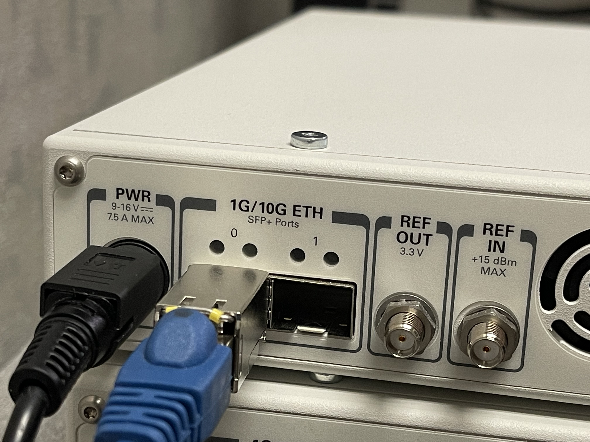
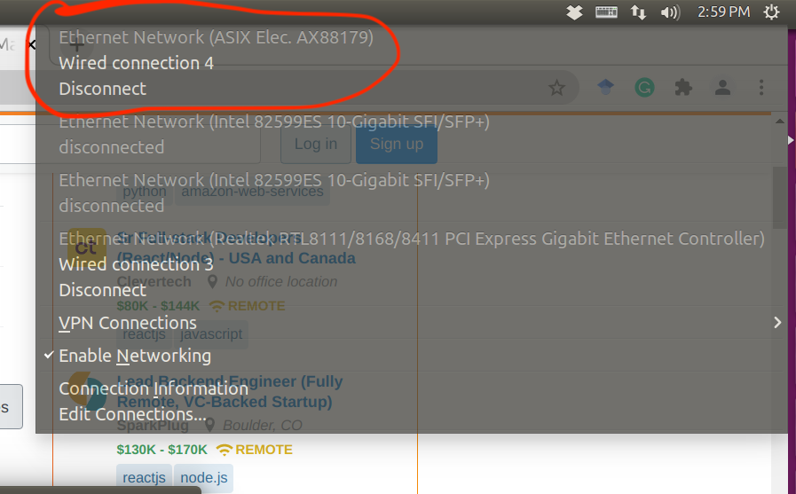
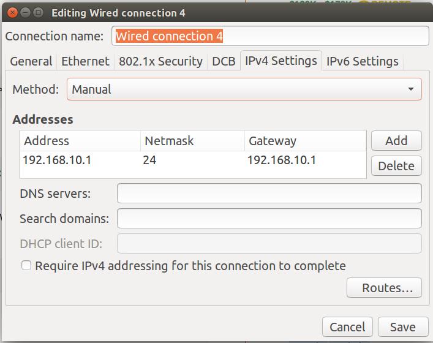

USRP X310 Connectivity
Connect to host via Gigabit Ethernet
It is recommended to connect the USRP X310 directly with the host via Gigabit Ethernet interface.
STEP 1: Connect ethernet cable to the port 0 on X310. 1 Gigabit to SFP+ adapter and >Cat5E cable are required.

STEP 2: Configure the network of host.
- Check the connection X310 is using in Ubuntu network manager. Here, I use an USB Ethernet card, which is wired connection 4.

- Go to the connection setup, IPV4 settings. Configure the host as following.

STEP 3: Disable networking, then enable networking.
STEP 4: Check device connectivity using uhd_find_devices.
jiawei@evga:~$ uhd_find_devices
[INFO] [UHD] linux; GNU C++ version 5.4.0 20160609; Boost_105800; UHD_3.14.0.HEAD-0-g6875d061
--------------------------------------------------
-- UHD Device 0
--------------------------------------------------
Device Address:
serial: 31792BA
addr: 192.168.10.2
fpga: HG
name:
product: X310
type: x300
Run uhd_usrp_probe --args addr=192.168.10.2 to make sure all components are correctly detected and usable.
Ten Gigabit
STEP 1: Connect the SFP+ cable to port 1.
Step 2: Same as Gigabit Ethernet one. Except the host IP should be 192.168.40.1
jiawei@evga:~$ uhd_find_devices
[INFO] [UHD] linux; GNU C++ version 5.4.0 20160609; Boost_105800; UHD_3.14.0.HEAD-0-g6875d061
--------------------------------------------------
-- UHD Device 0
--------------------------------------------------
Device Address:
serial: 31792BA
addr: 192.168.40.2
fpga: HG
name:
product: X310
type: x300
Change the USRP’s IP address
cd /usr/local/lib/uhd/utils
./usrp_burn_mb_eeprom --args="addr=192.168.40.2,type=x300" --read-all
./usrp_burn_mb_eeprom --args="addr=192.168.40.2,type=x300" --values="ip-addr0=192.168.10.3"
In my case, the install path is /usr/local/lib/uhd/utils
Default X310 Network Parameters
| Ethernet Interface | USRP Ethernet Port | Default USRP IP Address | Host Static IP Address | Host Static Subnet Mask | Address EEPROM key | Connection Type |
|---|---|---|---|---|---|---|
| Gigabit | Port 0 (HG Image) | 192.168.10.2 | 192.168.10.1 | 255.255.255.0 | ip-addr0 | Single |
| Ten Gigabit | Port 0 (XG Image) | 192.168.30.2 | 192.168.30.1 | 255.255.255.0 | ip-addr2 | Twin |
| Ten Gigabit | Port 1 (HG/XG Image) | 192.168.40.2 | 192.168.40.1 | 255.255.255.0 | ip-addr3 | Single |
sudo ifconfig enp3s0f0 mtu 9000
sudo ifconfig enp3s0f1 mtu 9000
sudo sysctl -w net.core.rmem_max=24862979
sudo sysctl -w net.core.wmem_max=24862979
for ((i=0;i<$(nproc);i++)); do sudo cpufreq-set -c $i -r -g performance; done
cpufreq-info